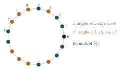

Let \(y = \cos\phi + \cos 2\phi\), where \(\phi = \dfrac{2\pi}{5}\). Verify by direct substitution that \(y\) satisfies the quadratic equation \(2y^2 = 3y + 2\) and deduce that the value of \(y\) is \(-\frac12\).
Let \(\theta = \dfrac{2\pi}{17}\). Show that \[\sum_{k=0}^{16}\cos k\theta = 0.\] If \(z = \cos\theta + \cos 2\theta + \cos 4\theta + \cos 8\theta\), show that the value of \(z\) is \(-(1 - \sqrt{17})/4\).
The hook
On 30 March 1796, an eighteen-year-old student at Göttingen made the first entry in a mathematical diary he would keep for the rest of his life. He had discovered how to construct a regular \(17\)-sided polygon with ruler and compasses. The Greeks had known how to construct regular polygons with \(3\), \(4\), \(5\) and \(15\) sides, and doubles of these, and for two thousand years nobody had added a single new one. Carl Friedrich Gauss later said that this discovery decided him to become a mathematician rather than a philologist, and he is said to have asked for a \(17\)-gon to be carved on his tombstone.
The heart of the construction is the second half of this question: the sum of four particular cosines equals \(\frac{\sqrt{17} - 1}{4}\), a number involving only a square root. Lengths built from square roots can be constructed with ruler and compasses, and with three more steps of the same kind Gauss could construct \(\cos\frac{2\pi}{17}\) itself.
Before you start
Why does the first part, about \(\cos\frac{2\pi}{5}\), appear in a question about the \(17\)-gon?
It is a warm-up, using the same idea on a smaller polygon. For the pentagon, the sum \(\cos\phi + \cos 2\phi\) satisfies a quadratic with rational coefficients, so it can be found by solving a quadratic. For the \(17\)-gon, the sum \(z\) of four cosines will turn out to satisfy a quadratic too. The trick in both cases is to multiply cosines together and use \(\cos A\cos B = \frac12\bigl(\cos(A + B) + \cos(A - B)\bigr)\) to turn products back into sums of cosines of the same angles.
Working it through
Stage 1 The pentagon
Expand \(y^2 = (\cos\phi + \cos 2\phi)^2\), turn each product into a sum, and use \(5\phi = 2\pi\) to reduce angles like \(3\phi\) and \(4\phi\).
\[y^2 = \cos^2\phi + 2\cos\phi\cos2\phi + \cos^2 2\phi = \tfrac12(1 + \cos 2\phi) + (\cos 3\phi + \cos\phi) + \tfrac12(1 + \cos 4\phi).\] Since \(5\phi = 2\pi\), \(\cos 3\phi = \cos(2\pi - 2\phi) = \cos 2\phi\) and \(\cos 4\phi = \cos\phi\). So \[y^2 = 1 + \tfrac12(\cos\phi + \cos2\phi) + (\cos\phi + \cos 2\phi) = 1 + \tfrac32 y,\] that is, \(2y^2 = 3y + 2\).■ The roots of \(2y^2 - 3y - 2 = (2y + 1)(y - 2) = 0\) are \(y = 2\) and \(y = -\frac12\). But \(y = 2\) would need both cosines to equal \(1\), which they do not, so \(y = -\frac12\).■
Stage 2 The seventeenth roots of unity sum to zero
\(\sum_{k=0}^{16}\cos k\theta\) is the real part of \(\sum_{k=0}^{16}\omega^k\), where \(\omega = e^{\mathrm{i}\theta}\) is a primitive \(17\)th root of unity. That geometric series is \(\frac{\omega^{17} - 1}{\omega - 1} = 0\).■
So \(\sum_{k=1}^{16}\cos k\theta = -1\). Since \(\cos(17 - k)\theta = \cos k\theta\), the terms pair up, and \[\sum_{k=1}^{8}\cos k\theta = -\tfrac12.\]
Stage 3 Splitting the cosines into two groups
Let \(z = \cos\theta + \cos2\theta + \cos4\theta + \cos8\theta\), and let \(z'\) be the sum of the other four cosines, \(\cos3\theta + \cos5\theta + \cos6\theta + \cos7\theta\). What is \(z + z'\)?
By Stage 2, \(z + z' = -\frac12\). If we can also find \(zz'\), then \(z\) and \(z'\) are the roots of a quadratic.
Compute \(zz'\). Expand it as \(16\) products \(\cos a\theta\cos b\theta\), turn each into a sum of two cosines, and count how often each of \(\cos\theta, \cos2\theta, \ldots, \cos8\theta\) appears. (Reduce angles using \(\cos k\theta = \cos(17 - k)\theta\) and \(\cos(-k\theta) = \cos k\theta\).)
Each product gives \(\cos a\theta\cos b\theta = \frac12\bigl(\cos(a + b)\theta + \cos(a - b)\theta\bigr)\), so \(zz'\) is \(\frac12\) times a sum of \(32\) cosines. Working through the \(16\) pairs with \(a \in \{1, 2, 4, 8\}\) and \(b \in \{3, 5, 6, 7\}\): for example \(a = 1\), \(b = 3\) gives \(\cos4\theta\) and \(\cos2\theta\); \(a = 8\), \(b = 7\) gives \(\cos15\theta = \cos2\theta\) and \(\cos\theta\). Carrying this out for all sixteen pairs, each of \(\cos\theta, \ldots, \cos8\theta\) appears exactly four times. Therefore \[zz' = \tfrac12 \times 4 \times \sum_{k=1}^{8}\cos k\theta = 2 \times \left(-\tfrac12\right) = -1.\]
Stage 4 The quadratic
So \(z\) and \(z'\) are the roots of \(t^2 + \frac12 t - 1 = 0\), that is, \(4t^2 + 2t - 4 = 0\), with roots \(t = \frac{-1 \pm \sqrt{17}}{4}\). Which is \(z\)? Numerically \(\cos\theta \approx 0.932\), \(\cos2\theta \approx 0.739\), \(\cos4\theta \approx 0.092\) and \(\cos8\theta \approx -0.983\), so \(z \approx 0.78 > 0\). Hence \[z = \frac{-1 + \sqrt{17}}{4} = -\frac{1 - \sqrt{17}}{4}. \qed\]
Looking back
Products to sums. The product formula for cosines turned \(y^2\) and \(zz'\) into sums of the same cosines, so the algebra closed up.
Sum and product give a quadratic. Knowing \(z + z'\) and \(zz'\) is the same as knowing the quadratic with roots \(z\) and \(z'\).
The right split matters. Splitting the eight cosines into \(\{1, 2, 4, 8\}\) and \(\{3, 5, 6, 7\}\) made every index appear equally often in \(zz'\). A random split would not work.
What’s really going on
Why \(\{1, 2, 4, 8\}\)? Modulo \(17\), the powers \(3^0, 3^1, 3^2, \ldots\) of \(3\) run through all the non-zero residues: \[1, 3, 9, 10, 13, 5, 15, 11, 16, 14, 8, 7, 4, 12, 2, 6.\] Taking every other one, \(3^0, 3^2, 3^4, \ldots\), gives \(1\), \(9\), \(13\), \(15\), \(16\), \(8\), \(4\), \(2\), which are \(\pm1\), \(\pm2\), \(\pm4\), \(\pm8\) modulo \(17\): exactly the angles in \(z\). The other half gives \(\pm3, \pm5, \pm6, \pm7\), the angles in \(z'\). Gauss called the sums of \(\omega^k\) over such classes periods. Because \(17 - 1 = 16 = 2^4\), the residues can be halved four times, and at each stage the periods satisfy quadratic equations whose coefficients involve the periods of the previous stage. Four quadratics, so four square roots, lead from the rational numbers down to \(\cos\frac{2\pi}{17}\): \[\begin{gathered} \cos\tfrac{2\pi}{17} = \tfrac{1}{16}\Bigl(-1 + \sqrt{17} + \sqrt{34 - 2\sqrt{17}} \\ {} + 2\sqrt{17 + 3\sqrt{17} - \sqrt{34 - 2\sqrt{17}} - 2\sqrt{34 + 2\sqrt{17}}}\Bigr). \end{gathered}\] Every step involves only square roots, and square roots can be constructed with ruler and compasses (using similar triangles or a semicircle), so the \(17\)-gon is constructible.

Which polygons can be constructed?
Gauss claimed, and Pierre Wantzel proved in 1837, that a regular \(n\)-gon can be constructed with ruler and compasses exactly when \(n\) is a power of \(2\) times a product of distinct Fermat primes, primes of the form \(2^{2^m} + 1\). The known Fermat primes are \(3\), \(5\), \(17\), \(257\) and \(65537\), the Fermat numbers of Section 1.1. (Fermat guessed that all such numbers are prime, but Euler showed that \(2^{32} + 1\) is divisible by \(641\), and no further Fermat primes have ever been found.) So the \(257\)-gon and the \(65537\)-gon are constructible; in the nineteenth century Johann Hermes spent about ten years working out the construction of the \(65537\)-gon, and his manuscript is kept at Göttingen. The \(7\)-gon and \(11\)-gon are not constructible, because \(7\) and \(11\) are not Fermat primes (\(7 - 1 = 6\) and \(11 - 1 = 10\) are not powers of \(2\)), and neither is the \(9\)-gon, because \(9 = 3^2\) repeats the Fermat prime \(3\). Wantzel’s proof uses the theory of field degrees from Section 6.3.
The thinking skill
To find a quantity, pair it with a natural partner, compute their sum and their product, and solve the resulting quadratic.
The art is in choosing the partner so that both sum and product can be computed. Here the partner came from the symmetry of the residues modulo \(17\), and repeating the idea four times gave Gauss his construction.
Try this next
The heptagon. (From STEP II, 1995.) Let \(\alpha = e^{2\pi\mathrm{i}/7}\). Show that \(\eta = \alpha + \alpha^2 + \alpha^4\) and \(\eta' = \alpha^3 + \alpha^5 + \alpha^6\) satisfy \(\eta + \eta' = -1\) and \(\eta\eta' = 2\). Deduce that \(\cos\frac{2\pi}{7} + \cos\frac{4\pi}{7} + \cos\frac{8\pi}{7} = -\frac12\), and that \(\sin\frac{2\pi}{7} + \sin\frac{4\pi}{7} + \sin\frac{8\pi}{7} = \frac{\sqrt7}{2}\), explaining how you decide the sign.
The pentagon. Show that \(\cos\frac{2\pi}{5} = \frac{\sqrt5 - 1}{4}\), and use it to describe a ruler-and-compasses construction of a regular pentagon.
The other period. Check numerically that \(z' = \cos3\theta + \cos5\theta + \cos6\theta + \cos7\theta = \frac{-1 - \sqrt{17}}{4}\).
Generators. Show that the powers of \(3\) modulo \(17\) give every non-zero residue, but the powers of \(2\) do not. Which residues do the powers of \(2\) give?
Further reading
Ian Stewart, Galois Theory (CRC Press). Chapter on ruler-and-compass constructions and the regular \(17\)-gon.
Richard Courant & Herbert Robbins, What Is Mathematics? (Oxford University Press). Chapter 3 is a beautiful elementary account of constructions, including the \(17\)-gon.
Daniel Kehlmann, Measuring the World (Quercus). A comic novel about Gauss and Alexander von Humboldt, for light relief.